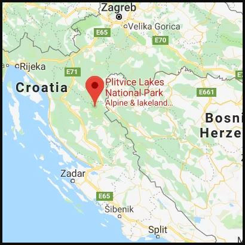
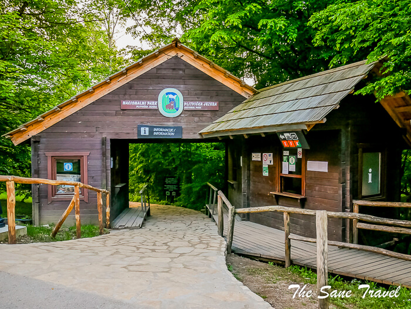
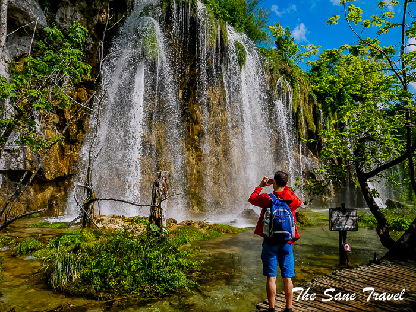
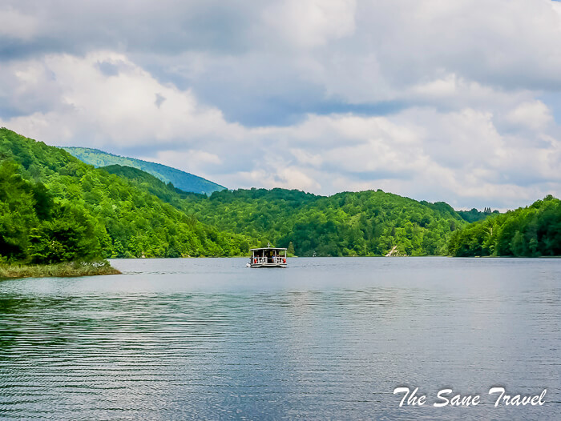
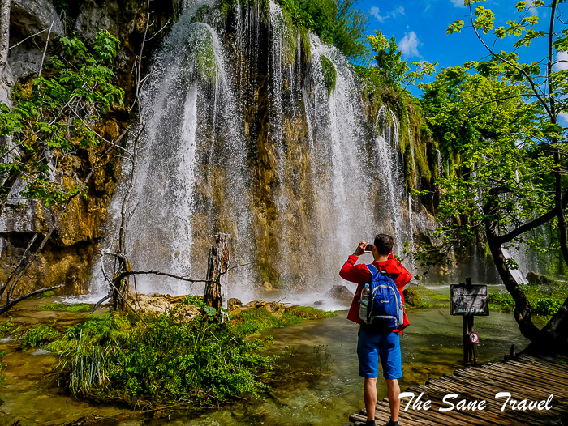
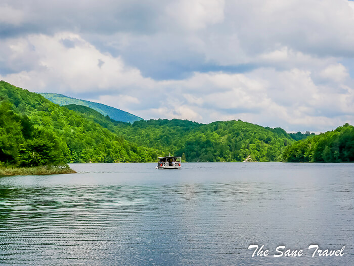

How to Get There?
Cities with airports that are the closest to the park are Zagreb (ZAG) and Zadar (ZAD). If you use public transport, you have to travel the final 140 kilometres to the park by bus from each of them. Get by Bus is a good website to buy your ticket online. Before buying your ticket, you have to know at which entrance you want to get off. The Plitvice park has two entrances, located 3,5 kilometres from each other. Most visitors choose entrance number 1 so you have a good reason to choose entrance number 2 to see less of a crowd. As most of the suggested trails are circular, starting and ending at the same place, it does not make a big difference where you start. I would very much recommend you arrive at Plitvice in the evening the day before your visit and stay at the hotel near the park entrance. If you want to be 100% sure to secure your entrance ticket, you can buy it online not less than 48 hours before your visit.

 



 Dubrovnik Old Town Walls
Dubrovnik Old Town Walls Diocletian's Palace in Split
Diocletian's Palace in Split Hvar Town
Hvar Town Zagreb's Gornji Grad
Zagreb's Gornji Grad Trogir
Trogir